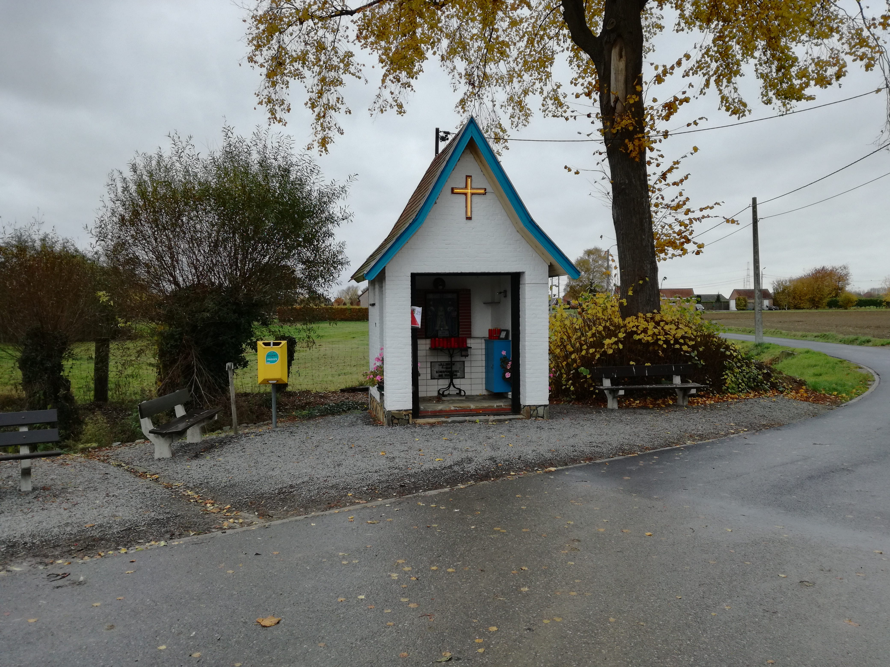
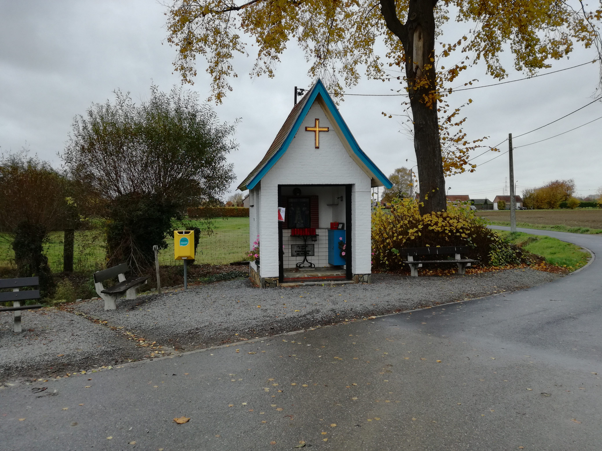

GR trails
In my spare time, I like to relax by walking on GR trails.
GR trails are long distance trails. They cover long distances which in Belgium generally means at least 200km. At the same time, they try to go through beautiful landscapes whilst avoiding paved roads as much as they can (which is very hard to do in Belgium).
As usually in Belgium where things develop separately based on region/language, we ended up with 2 organizations developing and maintaining the trails: Grote Routepaden for the Dutch speaking and Sentiers de Grande Randonnée for the French speaking. Their main activities are marking the trails and publishing walking guides.
The trails are mostly thematic and named after a region, river, … or just mentioning begin and end point like GR579 Bruxelles-Liège. But most of the time, we only mention the GR’s number like here GR579. Those numbers are not picked at random. GR started first in France and we build on their concept in Belgium. Because the French GR12 and GR5 are crossing our borders, we added our trails by creating branches. That’s why GR trails in Belgium often starts with GR 12x and GR 5xx.
Because of the distance, walking a whole trail can take several days but you are free to walk the trail the way you want. You can take a few days off and backpack or you could even spread it over a few months.
What I like about GR walks
- At the time I started walking these trails as a replacement for my (addiction to) running. With these trails I could still exaggerate on the distances and fix myself some difficult-to-reach-goals.
- Today, Its mostly my way of relaxing. Walking through nature is perfect to take some distance from my worries. It’s also the perfect pace to make the mind wander.
- It’s not as much as a sport to me as in the beginning. In fact, it’s a nice “sport” to combine with a lot of eating.
- The landscape can be suprising and very beautifull...
 
